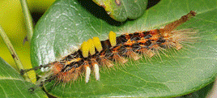
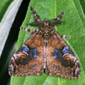
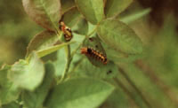
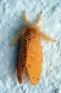

| Home |
| PEST OF ROSE |
mAJOR PESTES |
| 1. Rose thrips |
| 2. Red scale |
| 3. Red spider mite |
| 4. Rose aphid/lice |
mINOR PESTES |
| 1. Hairy caterpillar |
| 2. Castor semilooper |
| 3. Flower chaffer beetle |
| 4. Leaf folder |
| 5. Leaf cutting bee |
| Questions |
| Download Notes |
ROSE :: MINOR PEST ::HAIRY CATERPILLARS
5. Hairy caterpillars: Orgyia (=Notolopus) posticus, Euproctis fraterna (Lymantriidae: Lepidoptera)
Host range: Castor, rose.
Damage symptoms: Larvae cause defoliation.
Bionomics :
Orgyia postica: Hairy caterpillars of brown head, a pair of long pencils of hairs pointing forward from the prothorax and tuft of yellowish hairs dorsally on the first two abdominal segments, yellowish tufts of hairs dorsally on the first four abdominal segments and long brown hairs dorsally form the 8 th abdominal segment. Adult is brown coloured moth with stout abdomen.
|  |  |  |
Host range: Polyphagous, castor, mango, red gram, linseed, ground nut, grape vine, phalsa, pomegranate and pear.
Euproctis fraterna: Larva is reddish brown with red head surrounded by white hairs arising on warts and a long preanal tuft. Adult yellow moth with pale transverse lines on the forewings.
|  | Management |